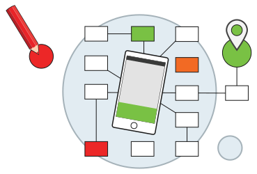

Site Web
Utilisateurs
Contenus
Contexte
Supports
Analyse de projet et recherche
Identifier le point de convergence entre les intentions (vendre, fidéliser, informer,...), celles des utilisateurs et les possibilités technologiques.
